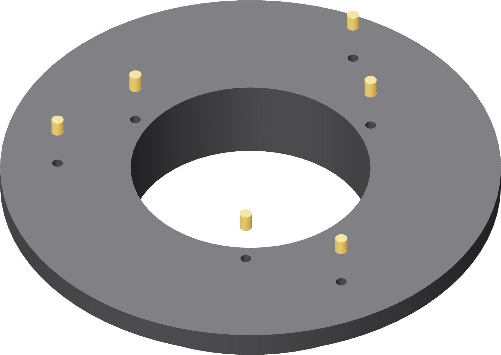
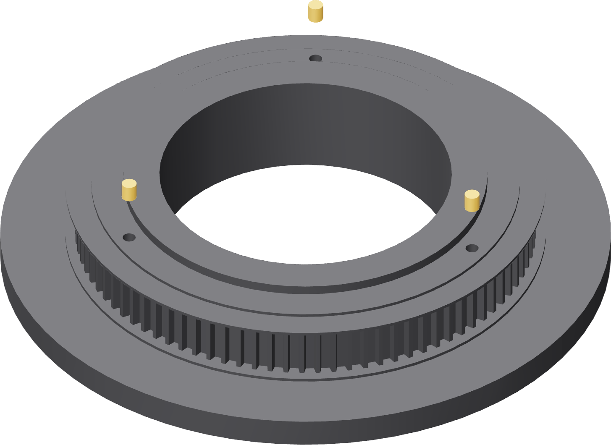

The turntable: nine
Six up into the flat underside, three down into the nest register face on the other side. Turn the part over once, between the two sets.


- Turn the turntable underside up on a clean flat surface. That face is a print datum — nothing gritty under it.
- Press three inserts on the outer circle, at 30°, 150° and 270°. These are for the race ring, and their pockets are 6.0 mm deep.
- Press three on the inner circle, at 60°, 180° and 300°. These are for the spool, and their pockets are 6.8 mm deep.
- Turn the turntable back over.
- Press three into the raised nest register face, at 0°, 120° and 240°, 5.2 mm deep.
Gate — the underside stays flat
Lay a straight edge across the underside over each insert. No rim may stand proud of that face. The race ring bolts flat to it, and a high insert becomes a tilted race, which becomes runout at the weld circle.